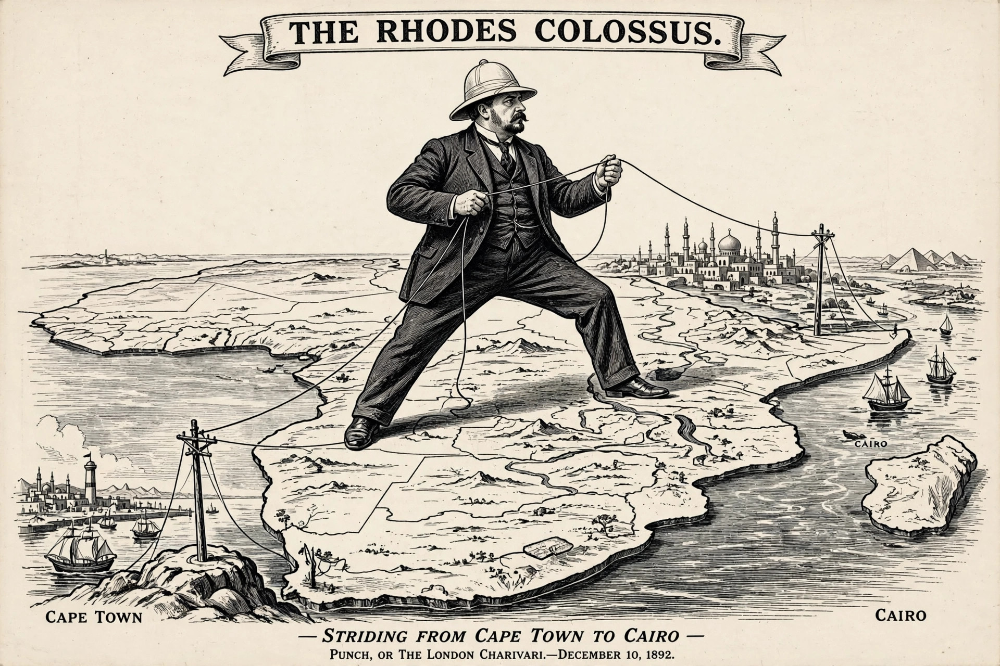

New Imperialism

New Imperialism refers to the colonial expansion of the European powers, the United States, and Japan in the late nineteenth and early twentieth centuries, roughly from the 1870s to the outbreak of the First World War in 1914. In a dramatic acceleration — epitomised by the "Scramble for Africa" — the European empires expanded to cover about a fifth of the world's land surface in new acquisitions; by 1914 some 84 per cent of the globe was controlled by European powers and their former colonies.
Characteristics
Unlike the earlier mercantile colonialism, the new imperialism involved direct territorial rule over vast hinterlands, driven by industrial capitalism's demand for raw materials and markets, strategic rivalry among the great powers, new technologies (steamships, telegraphy, breech-loading weapons, quinine prophylaxis) that made conquest cheaper, and ideologies of racial and civilisational superiority expressed in phrases such as the "civilising mission" and Kipling's "the White Man's burden". The Berlin Conference of 1884–85 set rules for claiming African territory, requiring effective occupation.
Theories
Contemporaries and historians have offered competing explanations. J. A. Hobson's Imperialism: A Study (1902) blamed underconsumption at home and surplus capital seeking outlets abroad; Vladimir Lenin's Imperialism, the Highest Stage of Capitalism (1917) adapted Hobson to argue that monopoly capitalism necessarily partitioned the world and made interimperialist war inevitable. Others have stressed strategy and prestige (the "official mind" of Robinson and Gallagher, who emphasised crises on the periphery), social Darwinism, domestic politics ("social imperialism"), and missionary and humanitarian impulses. The debate remains open.
Consequences
Imperial rule redrew borders without regard to peoples, extracted resources and labour — most notoriously in the Congo Free State of Leopold II, where rubber terror killed millions — built infrastructure primarily for extraction, and provoked resistance culminating in the decolonisation movements after 1945. Anti-imperialist thought, from Hobson and Lenin to later postcolonial theory, has shaped modern politics.